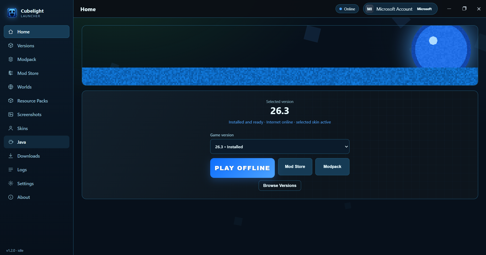
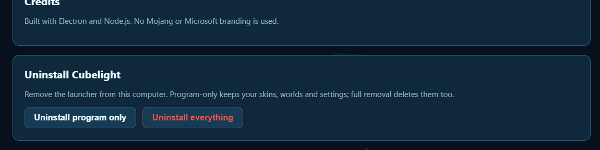
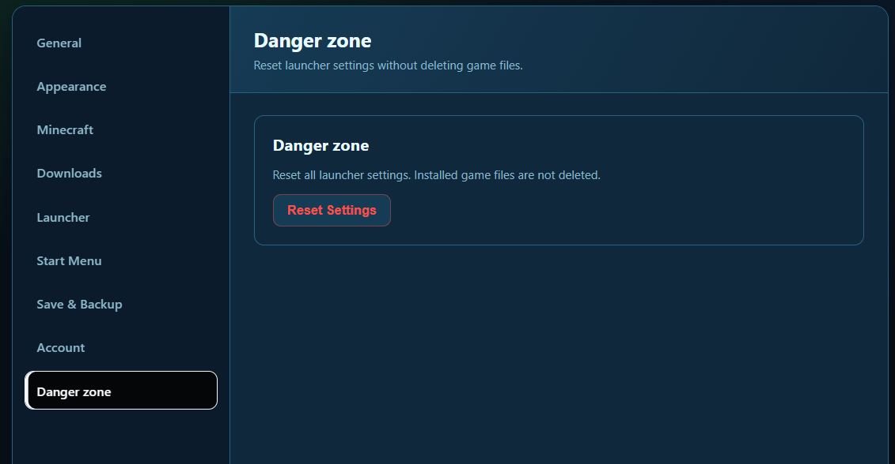

Releases / 1.2.0 · pre-release
Cubelight Launcher v1.2.0
1.2.0
Asset
CubelightSetup-1.2.0.exe
Size
≈ 75 MB
Installer
NSIS · per-user
Platform
Windows 10/11
What's new
- Uninstaller moved from About → Danger zone — uninstall lives where uninstall belongs now.
- Modpack images straight from the zip — the launcher reads
pack.png/ icon / logo from the modpack archive and saves it asmodpack-image, so packs show proper artwork. - Manifest preserved — the
imagePathsurvives when the modpack is loaded, so the icon sticks around. - “This Microsoft account does not own Minecraft: Java Edition” suppressed everywhere — the noisy false-positive error is silenced in all supported languages via i18n.
Upgrading
Install this setup over your existing Cubelight — settings, accounts and modpacks carry over. For most people, jumping straight to v1.2.1 is the better move.
Screenshots

Danger zone: About → Settings
The old Uninstall Cubelight block used to live at the bottom of About. In 1.2.0 it was moved out of About and into its own Danger zone section inside Settings, so destructive actions have one dedicated home instead of being buried in info pages.

